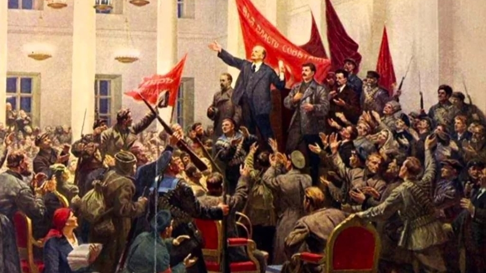

Октябрьская революция
Тип:
Революция
Время:
1917-1922
Революция
(полное официальное название в СССР — «Вели́кая Октя́брьская социалисти́ческая револю́ция»; иные названия, получившие распространение в историографии: Октя́брьский переворот, «Октябрьское восстание», «Красный Октябрь», «Великий Октябрь», «большевистский переворот») — социалистическая революция в октябре (по новому стилю — в ноябре) 1917 года, итогом которой стало свержение Временного правительства и установление советской власти, что существенным образом повлияло на дальнейший ход мировой истории. В историографии рассматривается либо как самостоятельное историческое событие, либо как продолжение Февральской революции. Временное правительство было свергнуто в ходе вооружённого восстания 25—26 октября (7—8 ноября по новому стилю) в Петрограде, главными организаторами которого были В. И. Ленин, Л. Д. Троцкий, Я. М. Свердлов, В. А. Антонов-Овсеенко, П. Е. Дыбенко и другие. Непосредственное руководство захватом власти осуществлял Военно-революционный комитет Петроградского Совета, в который входили также левые эсеры. В результате вооружённого переворота к власти пришло правительство, сформированное II Всероссийским съездом Советов, абсолютное большинство делегатов которого составили большевики (РСДРП(б)) и их союзники левые эсеры, поддержанные также некоторыми национальными организациями, небольшой частью меньшевиков-интернационалистов, и некоторыми анархистами. В ноябре 1917 года новое правительство было поддержано также большинством Чрезвычайного Съезда крестьянских депутатов. Данная революция имела далеко идущие последствия не только для России, но и для всего мира.


Источники:
wikipedia.org;